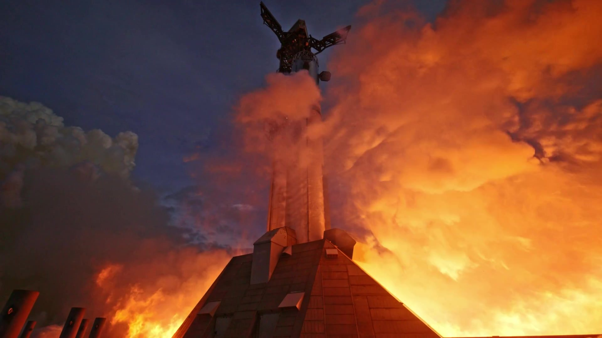
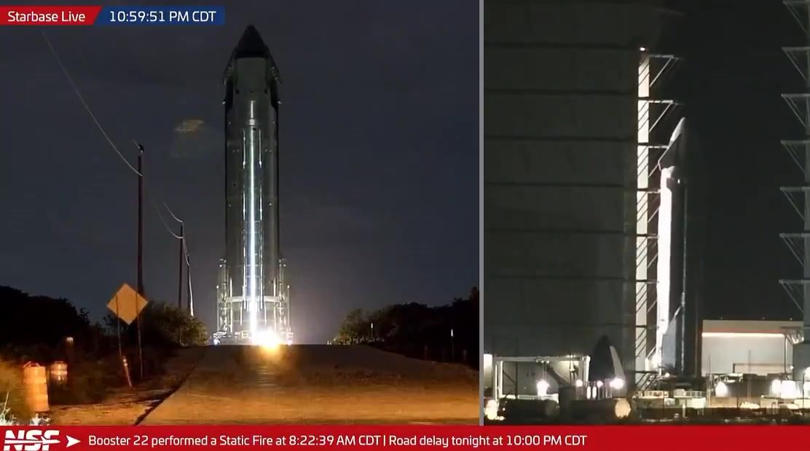
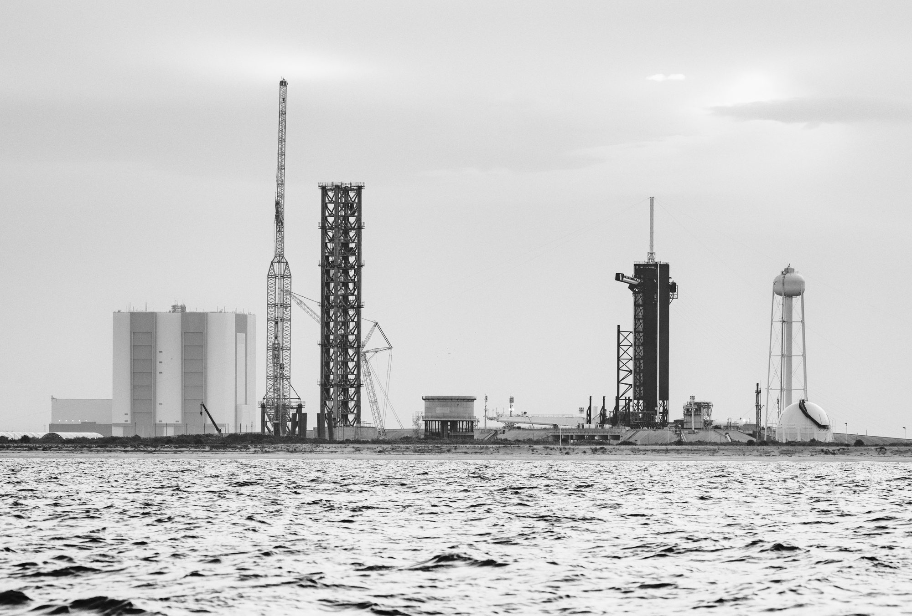

Alle 14:22 ora italiana di domenica 25 ottobre 2026, le 8:22 del mattino in Texas, i 33 motori Raptor di Starship Booster 22 si sono accesi insieme sul Pad 2 di Starbase. Il razzo è rimasto ancorato al supporto di lancio, avvolto dal vapore dell’impianto ad acqua, e la prova si è chiusa senza intoppi visibili. In serata SpaceX l’ha confermata con un video e una frase breve: «accensione statica di durata piena con 33 motori per il Super Heavy che si prepara a Flight 15». Il booster che dovrà tentare la prima doppia presa della storia ha così superato il suo esame più importante prima del lancio.
La prova di domenica, minuto per minuto
Booster 22 era arrivato al Pad 2 sabato 24 ottobre, dopo il trasferimento notturno dalla Mega Bay 1, ed era stato posato dalle braccia della torre sull’Orbital Launch Mount. La campagna di prova è stata rapida. Domenica alle 13:52 ora italiana, dalle telecamere fisse puntate sulla rampa, è partito il caricamento del propellente: metano e ossigeno liquidi pompati dal deposito dei serbatoi dentro il booster, fino a riempirlo come per un lancio vero.
Mezz’ora più tardi, alle 14:22 e 39 secondi, è arrivata l’accensione. Sotto la base del razzo si è aperta una palla di fuoco arancione, subito avvolta dalle nuvole di vapore sollevate dal sistema di raffreddamento del supporto di lancio. Poi lo spegnimento, il ritorno del silenzio e lo sfiato dei serbatoi. SpaceX non ha indicato quanti secondi sia durata la prova: la formula «durata piena» significa che è arrivata fino in fondo al programma previsto, senza interruzioni automatiche anticipate.
La conferma ufficiale è arrivata alle 20:49 ora italiana con il post di SpaceX, accompagnato da due video in alta definizione: uno ripreso da lontano, oltre gli specchi d’acqua che circondano la rampa, l’altro dal basso, accanto al supporto. All’1:26 della notte Elon Musk lo ha rilanciato con tre parole: «Starship Flight 15 static fire». Nel post SpaceX il booster non viene nominato con il suo numero, ma tutte le immagini e gli osservatori a Starbase lo identificano come Booster 22.

Perché lo static fire conta così tanto
Un’accensione statica è la cosa più vicina a un lancio che si possa fare restando a terra. Il booster viene caricato di propellente, i motori si accendono con la sequenza prevista per il decollo e tutto, dalle turbopompe dei Raptor alle valvole della rampa, lavora alle condizioni reali. Se un motore non parte o si spegne prima del tempo, i computer di bordo lo rilevano e i tecnici possono intervenire prima del volo, non durante.
Per Booster 22 la prova ha un valore in più. Si tratta di un Super Heavy della terza versione, la più recente, che a inizio settembre aveva già superato due prove criogeniche al sito di Massey’s. Il volo che lo aspetta è il più ambizioso mai tentato da Starship: nella teleconferenza sui conti del 20 ottobre Musk ha confermato che con Flight 15 SpaceX proverà a riprendere con la torre sia il booster sia lo stadio superiore. «Sarà la prima volta che un lanciatore orbitale viene recuperato completamente», ha detto. La presa del booster è già riuscita in passato. Quella della Ship, mai tentata, è il vero salto.
Un’accensione pulita al primo colpo pesa anche sul calendario. A volte un booster deve ripetere lo static fire, o tornare in fabbrica per sostituire un motore. Domenica non è successo: Booster 22 ha chiuso la prova alla prima occasione e già nella notte fra domenica e lunedì, intorno alle 5:30 ora italiana, le braccia della torre lo hanno sollevato dal supporto. Di norma, dopo lo static fire, il booster torna nella Mega Bay per le ultime ispezioni e attende lì il trasferimento definitivo verso la rampa.

Adesso tocca a Ship 42
Con il booster a posto, l’attenzione si sposta sullo stadio superiore. Ship 42, la Ship che gli osservatori associano a Flight 15, ha avuto un percorso meno lineare: a settembre era stata sollevata dalla torre del Pad 2 in una prova di presa simulata, poi le sono stati tolti i motori ed è tornata a Massey’s per un’ulteriore prova criogenica, senza spiegazioni ufficiali da parte di SpaceX.
Nella stessa notte in cui Booster 22 lasciava la rampa, intorno alle 5 ora italiana di lunedì, al sito di prova si è consumato un doppio movimento: Ship 43, destinata a Flight 16, è uscita da Massey’s dopo le sue prove criogeniche del 23 ottobre, e Ship 42 ha preso il suo posto. SpaceX non ha detto quale prova la aspetti. A Massey’s si trovano sia l’impianto per le prove a freddo sia il banco su cui le Ship accendono i loro sei motori, e lo static fire della Ship è il passaggio che manca per completare la coppia di Flight 15.
A quel punto resteranno due condizioni. La prima è la licenza della FAA, l’autorità americana per l’aviazione, che dovrà autorizzare per la prima volta il rientro della Ship verso la costa di Starbase: Gwynne Shotwell, presidente di SpaceX, ha detto il 20 ottobre di aspettarsi che includa «il ritorno al sito di lancio e la presa con la torre per entrambi gli stadi». La seconda è la data. I piani interni di Starbase indicano l’8 novembre come prima data possibile, Musk ha parlato di un lancio «poco prima del Ringraziamento», che quest’anno cade il 26 novembre. Nessuna delle due è una finestra ufficiale.

Flight 16 e la Florida: la coda dietro Booster 22
Lo static fire di domenica apre anche una fila. Il volo successivo, Flight 16, dovrebbe essere il debutto di Starship dalla Florida, dal complesso 39A del Kennedy Space Center, la rampa da cui partirono le missioni Apollo. I veicoli sono già assegnati: Booster 23 ha completato le prove criogeniche il 15 ottobre e dovrebbe essere pronto per lo static fire a fine novembre; Ship 43 ha concluso le sue il 23 ottobre e sta per tornare in Mega Bay 2 per ricevere i motori.
Fra i due c’è una differenza importante. Il booster può accendere i motori direttamente al 39A, e così facendo aiuterebbe a collaudare la nuova rampa. La Ship no: in Florida non esiste ancora un banco di prova per le Ship, quindi Ship 43 dovrà essere finita e provata in Texas, static fire compreso, prima di partire via mare sulla chiatta. Sui tempi visti con le Ship 40, 41 e 42, il suo static fire cadrebbe a metà dicembre e il trasferimento fra inizio e metà gennaio. Con questi passaggi, e senza problemi, il primo lancio dal 39A potrebbe arrivare a fine gennaio 2027, più tardi rispetto all’obiettivo di dicembre circolato nelle settimane scorse. SpaceX, però, ha spesso accorciato i tempi fra una prova e l’altra.
La rampa intanto si completa. Al 39A sono stati aggiunti due serbatoi di metano liquido, che portano la riserva a circa 5.000 tonnellate, abbastanza per quasi quattro lanci. Il 12 ottobre è stato installato un tetto rinforzato sulla cima della torre, pensato per resistere alle prese della Ship: ora tutte e quattro le torri costruite da SpaceX ne hanno uno. Da settembre sono cominciati i collaudi degli impianti, con lo sfiato della torre attivato il 12 settembre e il getto d’acqua del piano superiore provato per la prima volta il 24 settembre.
Roberts Road, il campus che potrebbe più che raddoppiare
Dietro la rampa c’è la fabbrica. A Roberts Road, l’area vicino al Kennedy Space Center dove SpaceX ricondiziona i Falcon 9 dal 2021, sorge già la prima Gigabay, l’enorme capannone che dovrà ospitare Booster 23 e Ship 43 al loro arrivo. Ma una sola Gigabay non basta per i ritmi annunciati da Musk, voli settimanali nella prima metà del 2027. Per questo SpaceX, insieme alla NASA, ha chiesto di ampliare il campus da 167 acri a quasi 400, cioè da circa 68 a circa 160 ettari.
Il progetto prevede banchi per l’accensione statica delle Ship, una nuova strada di collegamento con la NASA Parkway, un edificio per la preparazione dei carichi e, con ogni probabilità, altre Gigabay. Per ora è una bozza di valutazione ambientale programmatica, che dovrà passare per una consultazione pubblica e per le approvazioni finali. Poco più a sud, al complesso SLC-37, sono già al loro posto i serbatoi di ossigeno e metano, ma per rendere operativa la prima delle due rampe servirà probabilmente più di un anno.
| Data | Veicolo | Che cosa succede |
|---|---|---|
| 9-10 settembre | Booster 22 | Due prove criogeniche a Massey’s |
| 15 ottobre | Booster 23 | Fine delle prove criogeniche (candidato a Flight 16) |
| 23 ottobre | Ship 43 | Fine delle prove criogeniche a Massey’s (candidata a Flight 16) |
| 24 ottobre | Booster 22 | Trasferimento al Pad 2 e sollevamento sul supporto di lancio |
| 25 ottobre, 14:22 | Booster 22 | Static fire di durata piena con 33 motori, confermato da SpaceX |
| 26 ottobre, notte | Booster 22, Ship 42, Ship 43 | Booster 22 lascia il supporto; Ship 43 esce da Massey’s, entra Ship 42 |
| prossime settimane | Ship 42 | Static fire atteso, non ancora eseguito; licenza FAA attesa |
| 8 novembre o dopo | Flight 15 | Prima data possibile nei piani interni, con tentativo di doppia presa |
| fine gennaio 2027? | Flight 16 | Stima del primo lancio dal 39A, senza imprevisti; nessuna data ufficiale |
Che cosa aspettarsi adesso
Il segnale da seguire nei prossimi giorni è uno solo: l’accensione dei motori di Ship 42. Se arriverà pulita come quella di Booster 22, Flight 15 avrà entrambi gli stadi pronti e il calendario di novembre resterà realistico, in attesa della licenza FAA. Se invece la Ship dovesse richiedere altre prove, la data scivolerebbe verso la fine del mese.
Il resto della fila si muove comunque. Booster 23 e Ship 43 seguono a poche settimane di distanza, la rampa del 39A si avvicina al primo collaudo con un razzo vero e la Florida prepara un campus più che doppio rispetto a oggi. Domenica, però, il dato concreto è stato uno: un Super Heavy della nuova generazione ha acceso tutti i suoi motori, li ha spenti al momento giusto ed è pronto per il volo della doppia presa.
Il dossier di ieri su Booster 22 sul Pad 2 passa all’archivio Notizie: questa pagina mette in primo piano lo static fire e i passi successivi verso Flight 15 e Flight 16.
Fonti pubbliche e tracce
Ultimo aggiornamento editoriale: 26 ottobre 2026. Nel corpo non si ripete la fonte a ogni frase: le tracce sono raccolte qui. Gli orari sono convertiti in ora italiana (dal 25 ottobre è in vigore l’ora solare, UTC+1; in Texas vale ancora l’ora legale, UTC-5).
- SpaceX su X, 25 ottobre 2026, 19:49 UTC: «Full duration 33-engine static fire for the Super Heavy booster preparing for Flight 15», con due video della prova.
- Elon Musk su X, 26 ottobre 2026, 00:26 UTC: rilancio del post SpaceX, «Starship Flight 15 static fire».
- NASASpaceflight su X, 25 ottobre 2026, 12:52 UTC: inizio del caricamento del propellente per lo static fire di Booster 22.
- NASASpaceflight su X, 25 ottobre 2026, 13:24 UTC: static fire di Booster 22; nella diretta Starbase Live l’orario indicato è 8:22:39 CDT.
- Spaceflight Now su X, 25 ottobre 2026: static fire di Booster 22 alle 8:22 CDT, in preparazione a Flight 15 del mese prossimo (foto LabPadre).
- NASASpaceflight su X, 26 ottobre 2026, 04:01 UTC: Ship 43 rientra da Massey’s, Ship 42 ne prende il posto.
- NASASpaceflight su X, 26 ottobre 2026, 04:29 UTC: Booster 22 sollevato dal Pad 2 dopo lo static fire riuscito.
- NASASpaceflight, Starbase Summary del 25 ottobre 2026: riepilogo video di trasferimento, sollevamento e static fire di Booster 22 e dei veicoli futuri.
- NASASpaceflight, 25 ottobre 2026: Flight 16 dal LC-39A con Booster 23 e Ship 43, tempi stimati, lavori alla rampa (serbatoi di metano, tetto rinforzato, collaudi), bozza di valutazione ambientale per Roberts Road da 167 a quasi 400 acri, SLC-37.
- NASASpaceflight, 18 ottobre 2026: prima data possibile 8 novembre per Flight 15, percorso di Ship 42, piani per Flight 16.
- Next Spaceflight, scheda Booster 22: Super Heavy di terza versione, prove criogeniche del 9 e 10 settembre, static fire con 33 motori del 25 ottobre.
- Teslarati, 21 ottobre 2026: dichiarazioni di Musk e Shotwell nella teleconferenza del 20 ottobre (piena recuperabilità, licenza FAA, voli settimanali nel 2027).
Fotografie utilizzabili
Non esistono ancora foto a licenza libera dello static fire di Booster 22. La copertina e la ripresa ravvicinata sono fotogrammi dei video pubblicati da SpaceX su X; l’immagine dello scambio fra le Ship è un fotogramma della diretta Starbase Live di NASASpaceflight. Sono usate con credito e dicitura «uso editoriale non commerciale». La torre del 39A è una foto d’archivio a licenza libera CC BY 2.0. Dettagli in scheda dei crediti fotografici.
Apri il dossier archiviato su Booster 22 sul Pad 2 · Il dossier del 13 ottobre su Flight 15 · Archivio Notizie · Torna a SpaceX